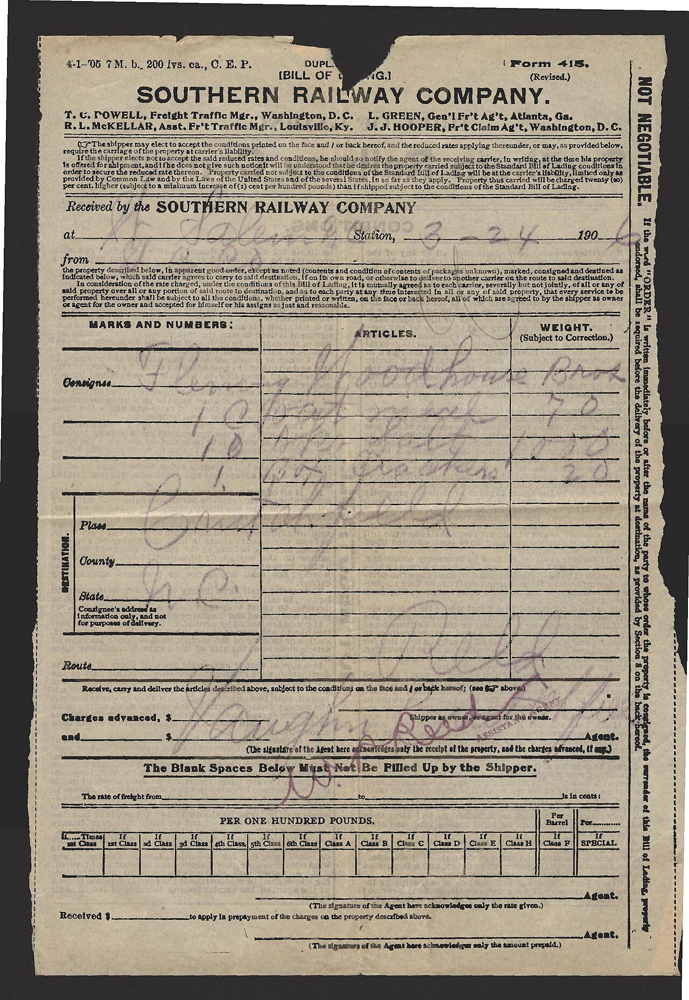

<h1>Financë - Mid - M3 — Krahasime</h1>
<figure class="photo"></figure>


<ul>
<li>Krahaso me periudhë të mëparshme (trend)</li>
<li>Krahaso me buxhetin (devijim)</li>
<li>Krahaso me konkurrentët (benchmark)</li>
<li>Devijimi = real − buxhet</li>
<li data-aoi="kritike" data-critical="true">Normalizo (për njësi, për %), jo vetëm shuma absolute</li>
</ul>

